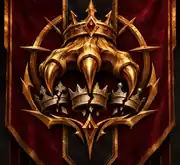

The Conqueror's ClawCanonical original illustration approved. The canonical image remains unchanged in design. This is the optimized website preview.
01 / THE LION KINGDOM — CANON APPROVED
The Conqueror's
Claw
The Lion Kingdom · Royal Insignia
The royal lion's claw descends from a sharp imperial crown and crushes three fallen crowns beneath it. The insignia embodies the kingdom's claim to conquest, domination and unquestioned authority.
Its canonical palette is antique gold, deep crimson and black. The reference artwork is fixed: future uses must preserve the design rather than inventing a new crest.